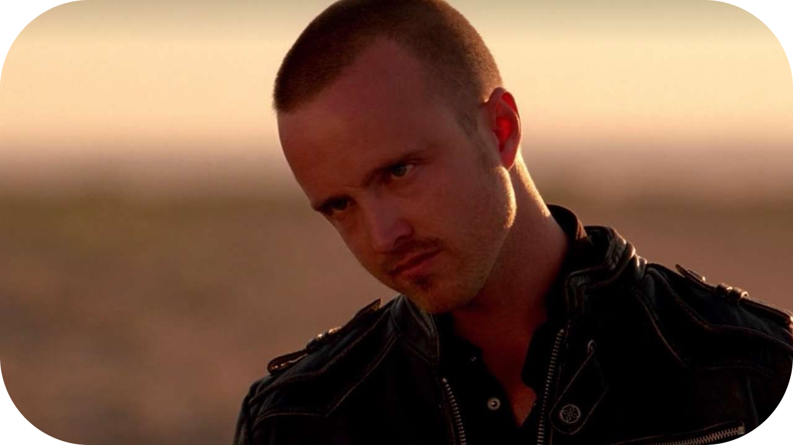

Jesse Pinkman
Jesse Pinkman, interpretado por Aaron Paul, é um dos protagonistas de Breaking Bad e uma das figuras mais emocionantes e trágicas da série. Jesse começa como um pequeno traficante e fabricante de metanfetamina com uma reputação questionável e uma vida caótica. Ele foi aluno de Walter White no ensino médio, mas não era um estudante exemplar, algo que Walter frequentemente usa para desmerecê-lo.
Quando Walter decide entrar no mundo das drogas, ele recruta Jesse para ajudá-lo, iniciando uma parceria que molda a trajetória de ambos. Apesar de seu estilo de vida desregrado e tendências impulsivas, Jesse é um personagem surpreendentemente empático e vulnerável, com um senso moral muito mais forte do que o de Walter. Isso o coloca em constante conflito com seu parceiro, especialmente à medida que as ações de Walter se tornam mais cruéis e manipuladoras.
Jesse enfrenta uma série de tragédias pessoais ao longo da série, incluindo a morte de pessoas próximas, como Jane Margolis, sua namorada, e Andrea Cantillo, outra pessoa por quem ele se importa profundamente. Essas perdas, muitas vezes indiretamente causadas pelas ações de Walter, aprofundam seu sofrimento e sentimentos de culpa. Ele também lida com seu histórico familiar complicado e uma baixa autoestima, o que o torna ainda mais suscetível à manipulação.
Apesar de tudo, Jesse demonstra um crescimento significativo ao longo da série, lutando para encontrar sua humanidade e escapar do ciclo de violência e destruição ao qual foi arrastado. Sua tentativa de redenção é um dos temas centrais de El Camino: A Breaking Bad Movie, que explora sua fuga e luta para começar de novo após os eventos traumáticos da série.
Aaron Paul recebeu inúmeros prêmios, incluindo três Emmys, por sua interpretação de Jesse Pinkman. O personagem é lembrado por seu linguajar único, humor sarcástico e profundidade emocional. Jesse é um retrato poderoso de luta, arrependimento e esperança, servindo como o contraponto moral à crescente escuridão de Walter White.